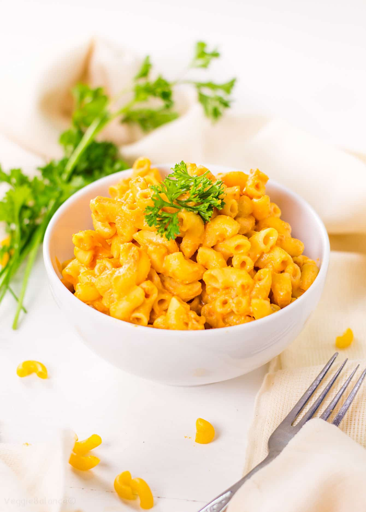

Vegan Mac and Cheese

Vegan Mac and Cheese
This is my third favorite food.
Ingredients
- Box of vegan mac and cheese
- Sauce pan
- Margarine
- Almond milk
Steps
- Open Vegan Mac and Cheese Box
- Bring 8oz of water to boil in sauce pan
- Reduce to simmer, add dry macaroni noodles
- Cook for 15 minutes
- Add cheese sauce when noodles are done
- Serve on plate or in bowl